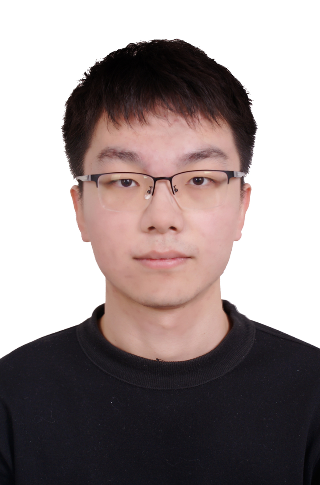
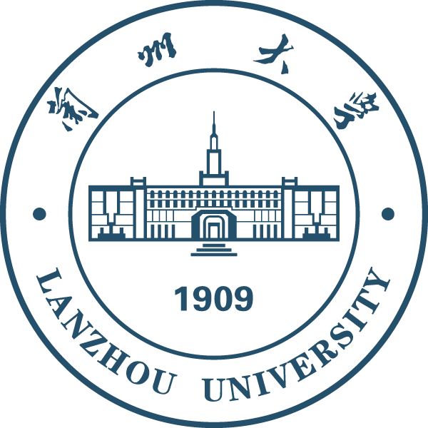

|  | 硕士研究生, 中国共产党党员 |
我现在是一名硕士三年级的学生(将于2025年6月毕业), 就读于兰州大学 数学与统计学院。 在此之前, 我于2022年6月在 兰州大学 数学与统计学院 数学（基础理论班）专业获得了学士学位。
我的研究兴趣主要包括: AI for Science; AI的底层数学原理; 计算机视觉;
|  | 硕士 兰州大学 (2022.9 ~ 2025.7)
|
学士 兰州大学 (2018.9 ~ 2022.7)
|
Multiscale modeling and simulation for anomalous and nonergodic dynamics: From statistics to mathematics
Heng Wang , Xuhao Li, Lijing Zhao, and Weihua Deng
Fundamental Research, 2025. [PDF]
Solving bivariate kinetic equations for polymer diffusion using deep learning
Heng Wang , and Weihua Deng
Journal of Machine Learning, 3, 215-244, 2024. [PDF]
Feynman-Kac equation for Brownian non-Gaussian polymer diffusion
Tian Zhou, Heng Wang , and Weihua Deng
Journal of Physics A: Mathematical and Theoretical, 57, 285001, 2024. [PDF]
Brownian non-Gaussian polymer diffusion in non-static media
Xiao Zhang, Heng Wang , and Weihua Deng
Chaos, 34, 123144, 2024. [PDF]
Discovering Facet-Dependent Formation Kinetics of Key Intermediates in Electrochemical Ammonia Oxidation by a Electrochemiluminescence Active Probe
Dina Sun, Jiaqi Zhang, Heng Wang , Yanxia Song, Jing Du, Genping Meng, Shihao Sun, Weihua Deng, Zhiyi Wang, Baodui Wang
Advanced Science, 11, 2402673, 2024. [PDF]
Navier-Stokes 方程的深度学习算法(No. 2025CXZX-151)
主持(在研); 起止年限: 2024年09月-2025年09月
2025年甘肃省高校研究生"创新之星"项目
反常与非遍历多尺度模型的高精度神经网络算法(No. 23ZDKA0005)
参与(在研); 起止年限: 2023年09月-2026年08月
甘肃省科技重大专项
高维、多尺度、多物理场问题的人工智能方法(No. 12426105)
参与(在研); 起止年限: 2025年01月-2025年12月
国家天元数学西北中心交叉应用课题
病态矩阵理论分析与数值计算
参与(在研); 起止年限: 2024年12月-2025年12月
2024年度敏捷实验室基金项目